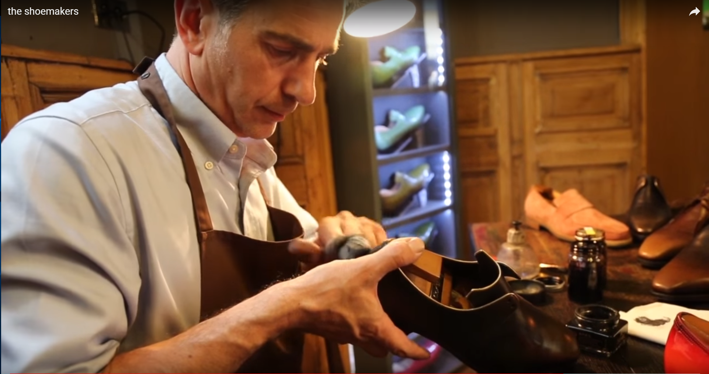
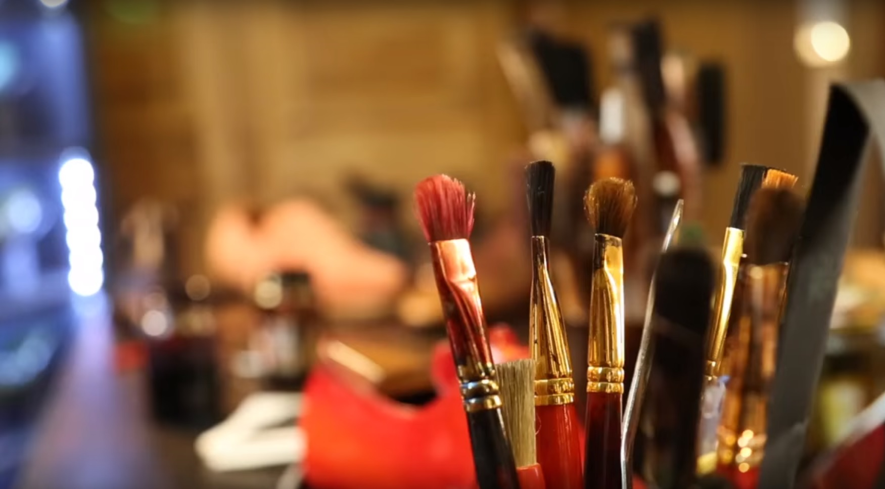
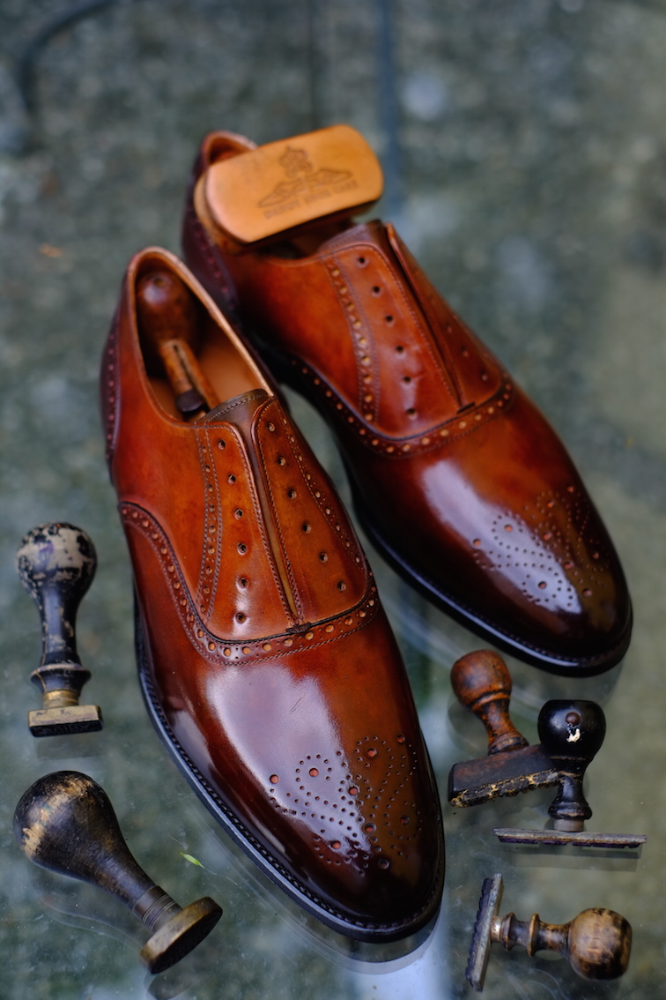

Stephane Villette
Coloriste sur cuirPortrait
Stéphane a commencé à 21 ans sa carrière chez Hermès et se consacre très vite à l'entretien et la finition des chaussures sur mesure John Lobb. Entre 2006 et 2015 il offre ses services à la maison Corthay pour la finition des chaussures de luxe. Après 20 ans d'expérience dans ces prestigieuses enseignes, il est aujourd'hui un des rares spécialistes de l'art de la patine.
L'art de la patine
La patine, c’est l'ensemble des techniques de coloration et décoloration du cuir, par l'application de solvants, huiles essentielles, pigments et teintures. Comme pour une œuvre d’art, Stephane jongle avec les pigments, joue avec les teintures et les huiles essentielles. Il se sert, pour appliquer ses produits, de multitudes d’outils : pinceaux de toutes tailles, éponges, chiffons…
Pourquoi faire patiner ses souliers ?
La patine permet de rendre vos souliers uniques, faisant ressortir votre personnalité.

Avant - Après

Réalisations
Cliquez sur les vignettes
pour plus de détailsBespoke Shoe, Stéphane JIMENEZ
Bespoke Shoe, Stéphane JIMENEZ
Bespoke Shoe, Stéphane JIMENEZ
Bespoke Shoe, Stéphane JIMENEZ
Bespoke Shoe, Stéphane JIMENEZ
Bespoke Shoe, Stéphane JIMENEZ